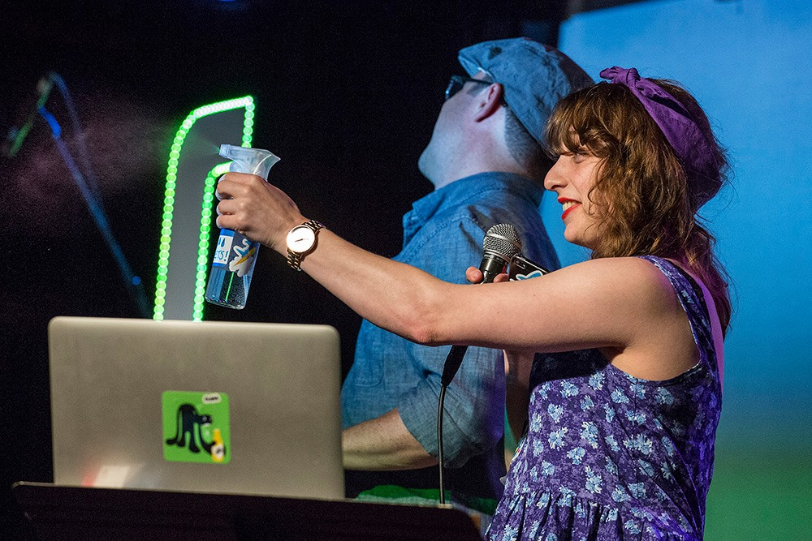

Sponsoring Our Events
About
On the third Thursday of every month, the local JavaScript community gets together for a day to hang out and talk shop.
The main event is BrooklynJS, which starts at 7pm and includes community-curated lightning talks with musical interludes. Admission is $15 and comes with a custom commemorative laser engraved token of the event, which can optionally be redeemed for a craft beer, wine, or soda
BrooklynJS is organized by Jed Schmidt, Brian Brennan, Will Duffy, and Mariko Kosaka.
Sponsorship Packages
- 1 month $500 Full Price
- 3 months $1,350 Save 10%
- 6 months $2,500 Save 20%
- Stage time: Two minutes of stage time to talk about your company.
- Free tickets: Two tickets for engineers at your company.
- Swag and merch: We have a table setup right by check-in for you to lay down some swag and mingle with our attendees.
- Branding: We'll tweet about you the week of the event. Let us know what you want us to tell folks about! We'll also list you on brooklynjs.com
Frequently Asked Questions
How do I buy a sponsorship ticket?You can purchase sponorship tickets through our normal ticketing page. We encourage all potential sponsors to reach out before buying their tickets so we can ensure that sponorship is the best fit for all parties involved. You can do so by sending an email to will@brookynjs.com.
Will we get to talk to the attendees?All sponsors are given a 2 minute segment in our intro to talk to attendees. If you would like customized slides during so please provide them before the day of the event. Otherwise, we'll have your logo included in our slides for you to talk in front of.
We also encourage all sponsors to hang around after the talks for Bevera.js to talk to attendees.
In addition to this, we will send a tweet out the week of the event to highlight an event or webpage of your choosing.
Where does the sponsorship money go?After every meetup we donate all remaining money to amazing organizations that share our values, like ScriptEd. Our budget is entirely transparent and can all be found on our Github repository's budget file.
Can we have a speaker the same month that we sponsor?BrooklynJS has a longstanding policy of not selecting speakers the same month that their company sponsors us. We do however encourage you to open up a pull request anyway for a talk submission and we'll keep you in the running for the next month!
How many other sponsors will there be?Each month we have three sponsors, all of who are given equal branding at our events. There are no tiered sponsorship packages.
There are no sponsorships left this month. Can we sponsor next month?Yes! Send an email to will@brookynjs.com and we'll be happy to get you setup for the next available month.
Contact Us
If you're interested in sponsoring BrooklynJS reach out to will@brooklynjs.com and we'll be happy to help you out.